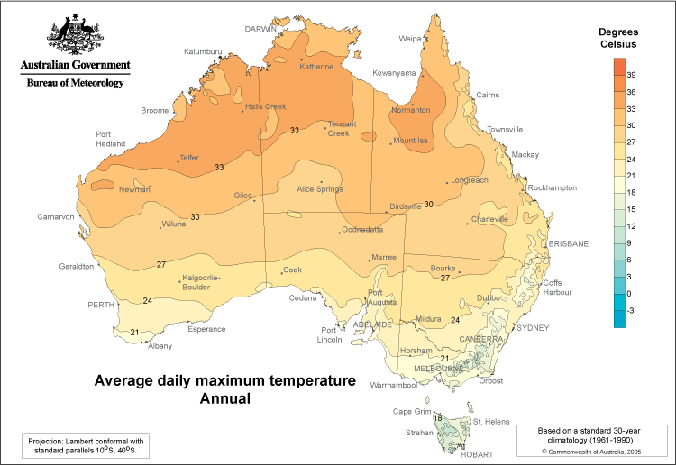

How do we convince more people to move to regional areas?
If we can convince industry to open more businesses in regional areas, then people would naturally follow to the available work in the regional area, here we look at some untapped resources within regional areas;
What Industry do people work in?
This visual shows how many people work in a particular industry over Western Australia if you mouse over an area, record the number underneath the map as value 'A'
What degrees do Regional People have that could be used by Industry?
This visual shows how many people have degrees in a particular field that live in each area of Western Australia. if you mouse over the same area as before, but think of the value at that area as value 'B'
If you subtract A from B, you will find a simple way to find the number of people that have relevant degrees in an area, but do not actually work in that field of study.
We believe this is an untapped resource that potential businesses could form around the regional area where there is this untapped potential for work.
For an Industry, what percentage of all people in that industry, work in a particular Occupation?
How many medium to large businesses(20+ Employees) are in rural areas?
This map shows the average daily maximum temperature for the whole of Australia
